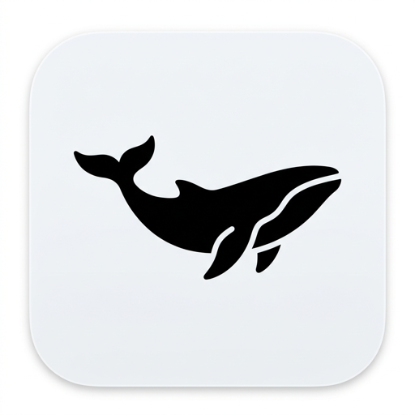
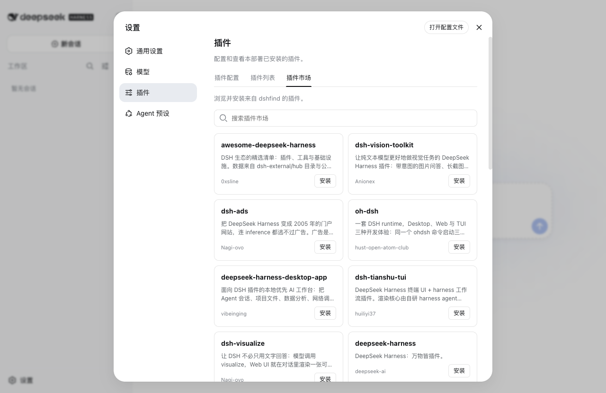

即开即用
Node、pnpm 与 dsh 随应用提供。首次启动完成引导后，即可进入官方 Harness Web。

deepseekDesktop 所有版本 ↗Harness 负责让 Agent 使用工具、理解环境并持续运行。
Deepseek 负责把这些能力带到桌面：更少安装步骤，并保留官方的会话、工作区与插件管理方式。
DESKTOP LAYER
Node、pnpm 与 dsh 随应用提供。首次启动完成引导后，即可进入官方 Harness Web。
会话、工作区和文件操作继续使用官方 Harness Web 的原生能力。
在官方「设置 → 插件」中打开「插件市场」标签，搜索 dshfind 并按官方命令安装。
PRODUCT PREVIEW
下图为端到端测试中打开官方「设置 → 插件 → 插件市场」后的真实界面。

FAQ
发布页提供 macOS 的 dmg 及 Linux 的 deb / AppImage。其他组合可在全部 Release 中获取。
当前 macOS 包采用 ad-hoc 签名且未公证。首次打开请选择“右键 → 打开”；如仍被拦截，可按 README 的步骤执行 xattr 命令后重试。
不会替换官方 Web。会话和工作区仍由官方页面处理；插件市场只通过官方提供的「设置 → 插件」扩展槽位接入，安装使用官方 dsh 命令。